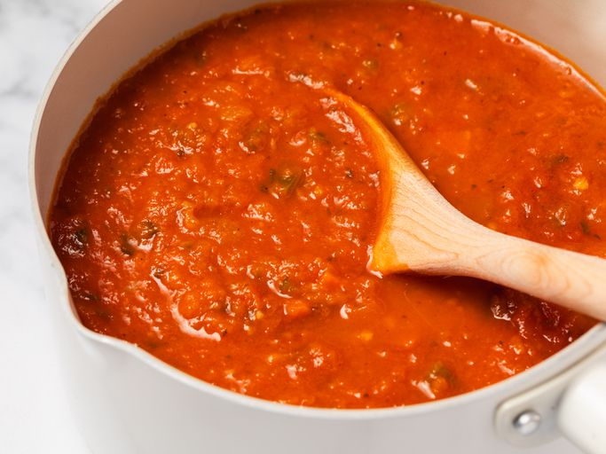

Home
Homemade Tomato Sauce

Description
This homemade tomato sauce is made with fresh tomatoes, slowly cooked
with onion, green pepper, basil, garlic, and red wine until rich
and flavorful.
Ingredients
- Tomatoes
- Butter or olive oil
- Vegetables
- Wine
- Seasonings and herbs
- Tomato paste
Steps
- Boil the tomatoes until the skin starts to peel, then transfer them
to an ice bath.
- Slip off the skin and squeeze the seeds.
- Chop eight tomatoes, then puree them in a blender. Chop the
remaining tomatoes and set aside.
- Sauté the veggies and garlic until very tender. Add the pureed
and chopped tomatoes.
- Stir in the wine, basil, and seasoning. Add the celery stalks and
bay leaf.
- Simmer for two hours, stir in the tomato paste, then continue
simmering for two more hours.
- Remove the bay leaf and celery before serving.